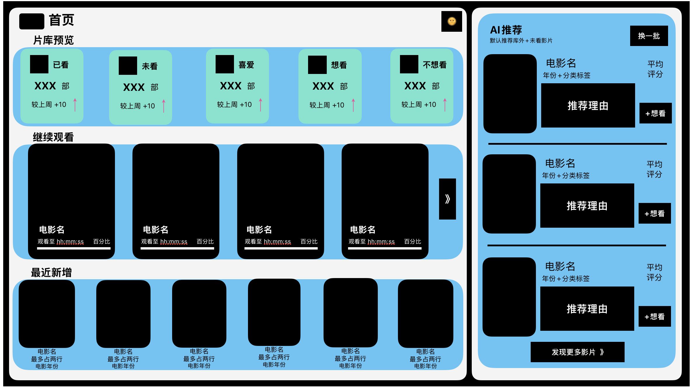
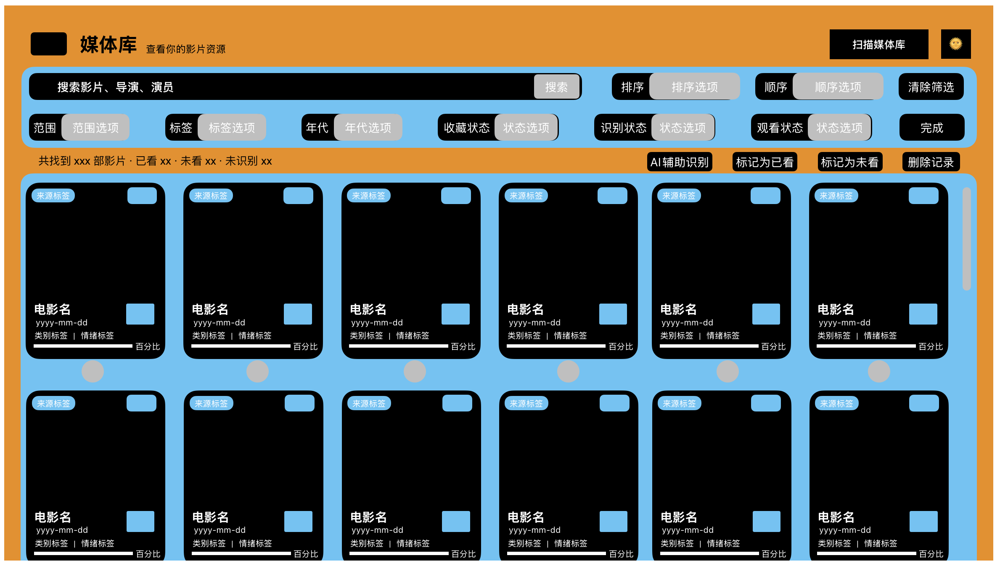
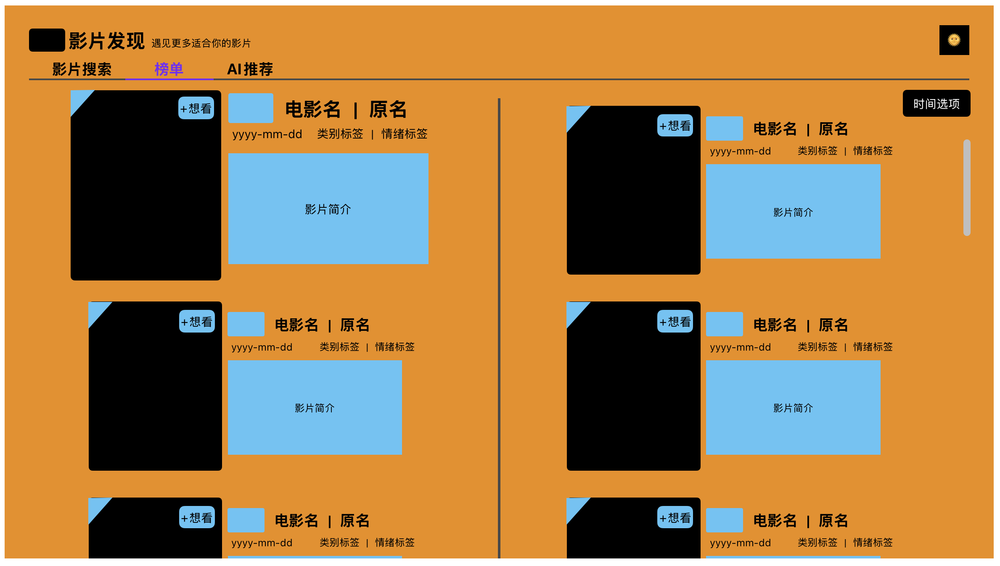
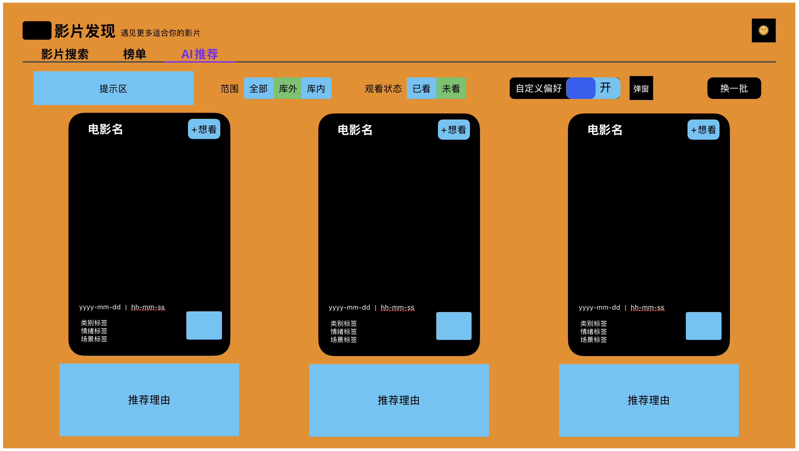

面向本地硬盘与 WebDAV 用户的智能观影发现平台。
会记录、会分析、会推荐，尊重本地数据隐私。



在基础媒体库之上，加入发现、统计、画像和推荐，
让私人片库从「存着」变成「懂你」。
从导入片源到 AI 发现，简单直接。
连接本地文件夹或 WebDAV 服务器，自动扫描影片文件，支持电影、电视剧与其他分类。
自动匹配 TMDB 影片信息，生成海报墙和完整资料库。支持手动修正识别与重新绑定。
浏览 TMDB 榜单，查看观影统计与人格画像。让 AI 根据你的口味推荐下一部作品。
在推荐理由可解释性盲测中，三路 AI 策略在用户信任度评分上显著优于单一协同过滤基线。
23 种观影人格分类在聚类一致性盲测中达 87% 稳定性，人格描述与实际观影记录高度吻合。
三路并行策略 + 候选池水印去重，在推荐多样性上显著优于传统 Top-N 推荐方案。
液态玻璃风格界面，支持媒体库、榜单发现、AI 推荐、观影统计与用户画像。

数据存储于本地 SQLite，核心观影记录与偏好绝不上传，隐私由你掌控。
23 种观影人格 · 6 维观影 DNA · 三路并行推荐策略——不止分类，更是理解。
集成 libmpv 播放器，支持多音轨、多字幕、多播放源无缝切换。
直接挂载远程片库，无需下载到本地即可浏览元数据与流式播放。
日历热力图、类型 / 情绪 / 场景分布、时段分析、工作日与周末对比。
每部推荐附理由——「因为你偏爱慢节奏科幻」而非黑盒输出。
标记不感兴趣后 AI 自动调整权重，推荐随你的口味持续进化。
基础功能完全免费，AI 增强为可选模块，用户自行配置 API 端点。
面向本地硬盘与 WebDAV 用户的智能观影发现平台。融合 AI 驱动的观影人格分析、多策略推荐与丰富的观影统计。完全开源，基础功能永久免费。
基础功能永久免费。AI 画像与推荐为可选增强，用户自主配置。
基础功能完全免费，包括扫描、搜刮、影视墙管理、本地播放与观影统计。AI 画像与推荐为可选增强模块，需自行配置 OpenAI 兼容 API 端点。
目前支持本地文件夹与 WebDAV 服务器两种来源。扫描后自动通过 TMDB / OMDb 获取海报、简介、演员等完整元数据。
采用三路并行策略：基于观影 DNA 的偏好洞察、跨类型风格探索、基于评分与情绪标签的匹配。候选池自动去重轮转，每批推荐 3 部影片并附带推荐理由。
不会。所有核心数据存储在本地 SQLite 数据库中。TMDB / OMDb 调用仅传输影片名称用于元数据匹配，AI API 调用仅传输脱敏后的观影偏好特征。
基于 mpv 播放内核，支持几乎所有常见格式——MKV、MP4、AVI、TS 等，以及 HDR、蓝光字幕、多音轨等高级特性。
通过 WebDAV 可实现跨设备的片库访问与流式播放。本地数据库暂不支持自动同步，我们计划在未来版本中加入可选的数据同步功能。